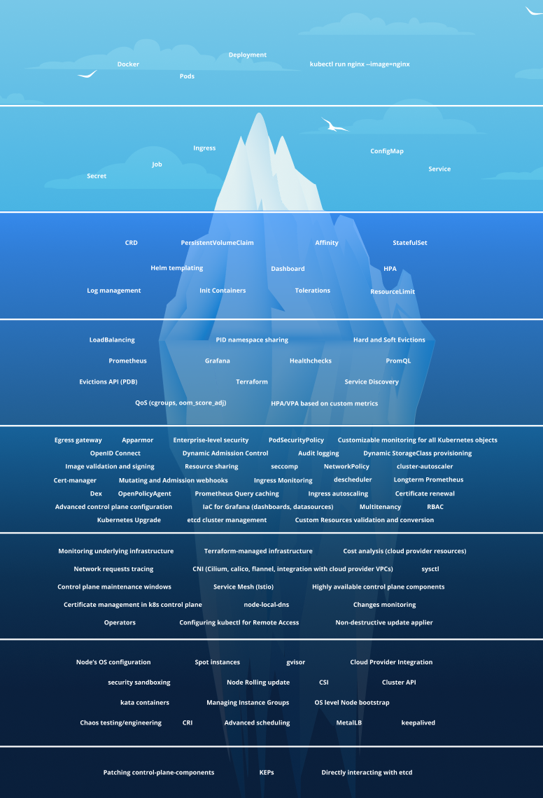

<!DOCTYPE html>
<html lang="en">
  <head>
    <meta charset="utf-8" />
    <meta name="viewport" content="width=device-width, initial-scale=1.0, maximum-scale=1.0, user-scalable=no" />

    <title></title>
    <link rel="stylesheet" href="dist/reveal.css" />
    <link rel="stylesheet" href="dist/theme/black.css" id="theme" />
    <link rel="stylesheet" href="plugin/highlight/zenburn.css" />
	<link rel="stylesheet" href="css/layout.css" />
	<link rel="stylesheet" href="plugin/customcontrols/style.css">


    <script defer src="dist/fontawesome/all.min.js"></script>

	<script type="text/javascript">
		var forgetPop = true;
		function onPopState(event) {
			if(forgetPop){
				forgetPop = false;
			} else {
				parent.postMessage(event.target.location.href, "app://obsidian.md");
			}
        }
		window.onpopstate = onPopState;
		window.onmessage = event => {
			if(event.data == "reload"){
				window.document.location.reload();
			}
			forgetPop = true;
		}

		function fitElements(){
			const itemsToFit = document.getElementsByClassName('fitText');
			for (const item in itemsToFit) {
				if (Object.hasOwnProperty.call(itemsToFit, item)) {
					var element = itemsToFit[item];
					fitElement(element,1, 1000);
					element.classList.remove('fitText');
				}
			}
		}

		function fitElement(element, start, end){

			let size = (end + start) / 2;
			element.style.fontSize = `${size}px`;

			if(Math.abs(start - end) < 1){
				while(element.scrollHeight > element.offsetHeight){
					size--;
					element.style.fontSize = `${size}px`;
				}
				return;
			}

			if(element.scrollHeight > element.offsetHeight){
				fitElement(element, start, size);
			} else {
				fitElement(element, size, end);
			}		
		}


		document.onreadystatechange = () => {
			fitElements();
			if (document.readyState === 'complete') {
				if (window.location.href.indexOf("?export") != -1){
					parent.postMessage(event.target.location.href, "app://obsidian.md");
				}
				if (window.location.href.indexOf("print-pdf") != -1){
					let stateCheck = setInterval(() => {
						clearInterval(stateCheck);
						window.print();
					}, 250);
				}
			}
	};


        </script>
  </head>
  <body>
    <div class="reveal">
      <div class="slides"><section  data-markdown><script type="text/template"><!-- .slide: class="drop" data-background-image="presentation/images/see-ship-612x612.jpg" -->
<div class="" style="position: absolute; left: 0px; top: 0px; height: 700px; width: 960px; min-height: 700px; display: flex; flex-direction: column; align-items: center; justify-content: center" absolute="true">

<style>
date {color: white; font-weight: normal; font-size: 30px}
name {color: white; font-weight: bold; font-size: 40px}
header1 {color: white; font-weight: normal; font-size: 50px}
header2 {color: orange; font-weight: bold; font-size: 80px}
header3 {color: orange; font-weight: bold; font-size: 50px}
header5 {color: orange; font-weight: bold; font-size: 30px}
header6 {color: orange; font-weight: bold; font-size: 20px}
</style>

<div class="flex-even" style="position: absolute; left: 0%; top: 0%; height: 40%; width: 100%; display: flex; flex-direction: row; align-items: center; justify-content: center" align="center">


<p>
<header1> Искам да пробвам </header1>
</p>


<p>
<header2>но как ?</header2>
</p>
</div>

<div class="" style="position: absolute; left: 0%; top: 70%; height: 30%; width: 90%; display: flex; flex-direction: column; align-items: flex-start; justify-content: space-evenly" align="left">


<p> 
<date>OpenFest, София, 16 октомври 2022</date> <br>
<name>Илиян Петков</name>
</p>

</div>
</div></script></section><section  data-markdown><script type="text/template"><!-- .slide: class="drop" -->
<div class="" style="position: absolute; left: 0px; top: 0px; height: 700px; width: 960px; min-height: 700px; display: flex; flex-direction: column; align-items: center; justify-content: center" absolute="true">

<div class="has-dark-background flex-even" style="background-color: #004EFF; position: absolute; left: 0%; top: 0%; height: 20%; width: 100%; display: flex; flex-direction: row; align-items: center; justify-content: space-evenly" align="left">

<name>&ensp; # whoami </name>
</div>

<div class="has-light-background flex-even" style="background-color: white; position: absolute; left: 0%; top: 20%; height: 80%; width: 100%; display: flex; flex-direction: row; align-items: center; justify-content: center" align="center">

<p style="padding-left: 15px; text-align: left"><font size="6">
Илиян Петков <br>
Инженер @VMware България <br>
Twitter: @Iliyan_Petkov <br>
LinkedIn: <a> https://www.linkedin.com/in/iliyan-s-petkov/ </a><br>
</font>
</p>
</div>

<div class="has-dark-background flex-even" style="background-color: transparent; position: absolute; left: 70%; top: 0%; height: 40%; width: 30%; display: flex; flex-direction: row; align-items: center; justify-content: center" align="center">


</div>
</div></script></section><section  data-markdown><script type="text/template"><!-- .slide: class="drop" data-background-image="presentation/images/see-ship-612x612.jpg" -->
<div class="" style="position: absolute; left: 0px; top: 0px; height: 700px; width: 960px; min-height: 700px; display: flex; flex-direction: column; align-items: center; justify-content: center" absolute="true">

<div class="flex-even" style="position: absolute; left: 0%; top: 0%; height: 100%; width: 40%; display: flex; flex-direction: row; align-items: center; justify-content: space-evenly" align="left">

&ensp; Програма
</div>

<div class="flex-even" style="border: thick solid yellow; box-sizing: border-box; position: absolute; left: 40%; top: 0%; height: 100%; width: 60%; display: flex; flex-direction: row; align-items: center; justify-content: space-evenly" align="left">


&ensp; 01 ~#whoami~ <br>
&ensp; 02  (Малко) Предистория <br>
&ensp; 03 K8s отвътре <br>
&ensp; 04 K8s: "The easy way*" <br>
&ensp; 05 K8s @вкъщи 

</div>
</div></script></section><section  data-markdown><script type="text/template"><!-- .slide: class="drop" data-background-image="presentation/images/see-ship-612x612.jpg" -->
<div class="" style="position: absolute; left: 0px; top: 0px; height: 700px; width: 960px; min-height: 700px; display: flex; flex-direction: column; align-items: center; justify-content: center" absolute="true">

<div class="flex-even" style="position: absolute; left: 0%; top: 35%; height: 30%; width: 100%; display: flex; flex-direction: row; align-items: center; justify-content: space-evenly" align="left">

<header2> 02 (Малко) Предистория </header2>
</div>
</div>

<aside class="notes"><ul>
<li>от bear metal през VM  до контейнер</li>
<li>какво е микросървис, </li>
<li>какво е контейнер</li>
<li>каква е разликата между контейнер и виртуална машина</li>
<li>какво е K8s и защо има нужда от оркестратори</li>
</ul>
</aside></script></section><section  data-markdown><script type="text/template"><!-- .slide: class="drop" data-background-image="RandomImages/ocean_still.jpg" -->
<div class="" style="position: absolute; left: 0px; top: 0px; height: 700px; width: 960px; min-height: 700px; display: flex; flex-direction: column; align-items: center; justify-content: center" absolute="true">

<div class="flex-even" style="position: absolute; left: 0%; top: 0%; height: 20%; width: 100%; display: flex; flex-direction: row; align-items: center; justify-content: space-evenly" align="left">

<header3> От физически сървъри до контейнери</header3>
</div>

<div class="flex-even" style="position: absolute; left: 0%; top: 10%; height: 80%; width: 100%; display: flex; flex-direction: row; align-items: center; justify-content: space-evenly" align="left">


</div>
</div></script></section><section  data-markdown><script type="text/template"><!-- .slide: class="drop" data-background-image="RandomImages/ocean_still.jpg" -->
<div class="" style="position: absolute; left: 0px; top: 0px; height: 700px; width: 960px; min-height: 700px; display: flex; flex-direction: column; align-items: center; justify-content: center" absolute="true">

<div class="flex-even" style="position: absolute; left: 0%; top: 0%; height: 20%; width: 100%; display: flex; flex-direction: row; align-items: center; justify-content: space-evenly" align="left">

<header3>Разлики между контейнер и виртуализация</header3>
</div>

<div class="" style="position: absolute; left: 0%; top: 20%; height: 80%; width: 100%; display: flex; flex-direction: column; align-items: center; justify-content: space-evenly" align="left">


</div>

<aside class="notes"><ul>
<li><a href="https://www.redhat.com/en/topics/virtualization">Virtualization</a> lets your operating systems (Windows or <a href="https://www.redhat.com/en/topics/linux">Linux</a>) run simultaneously on a single hardware system.</li>
<li>Containers share the same operating system kernel and isolate the application processes from the rest of the system. For example: <a href="https://www.redhat.com/en/topics/linux/what-is-arm-processor">ARM</a> Linux systems run ARM Linux containers, x86 Linux systems run x86 Linux containers, x86 Windows systems run x86 Windows containers. Linux containers are extremely portable, but they <a href="https://www.redhat.com/en/topics/linux/ARM-vs-x86">must be compatible</a> with the underlying system.</li>
</ul>
</div></aside></script></section><section  data-markdown><script type="text/template"><!-- .slide: class="drop" data-background-image="RandomImages/ocean_still.jpg" -->
<div class="" style="position: absolute; left: 0px; top: 0px; height: 700px; width: 960px; min-height: 700px; display: flex; flex-direction: column; align-items: center; justify-content: center" absolute="true">

<div class="flex-even" style="position: absolute; left: 0%; top: 0%; height: 20%; width: 100%; display: flex; flex-direction: row; align-items: center; justify-content: space-evenly" align="left">

<header3>Какво е контейнер ?</header3>
</div>

<div class="flex-even" style="position: absolute; left: 0%; top: 0%; height: 80%; width: 100%; display: flex; flex-direction: row; align-items: center; justify-content: space-evenly" align="left">

<p style="padding-left: 15px; text-align: left; line-height:80%"><font size="4">
* Масово популяризирани  от   <header6>Docker</header6>  но съществуващи още от Unix system 7 през 1979 с въвеждането на <header6>chroot</header6> <br>
* <header6>Енкапсулирани, преносими, изпълними</header6> - дефинират стандартен начин <header6> (OCI) </header6> за пакетиране , разпространение и изпълнение на приложения заедно с техните зависимости<br>
* <header6> Съдържат набор от един или повече процеси </header6>  изолирани от останалата система  <br> 
* Всички файлове необходими за работата на контейнра биват пакетирани в <header6>имиджи (images)</header6> <br>
* <header6>Имиджите се превръщат в контейнери</header6>  след като бъдат изпълнени <br>
* <header6> Linux, MAC OS и дори  Windows поддържат контейнери</header6>  <br>
</font>
</p>
</div>
<div class="flex-even" style="position: absolute; left: 60%; top: 70%; height: 30%; width: 40%; display: flex; flex-direction: row; align-items: center; justify-content: space-evenly" align="left">


</div>
</div>

<aside class="notes"><ul>
<li>контейнеризацията съществува от давна но дълго време е била трудна за използване</li>
<li>Началото е през далечната 1979 - Unix v7 със въвеждането на chroot - изолира приложенията като им дава отделни копия на файловата система</li>
<li>възприета от BSD през 1982</li>
<li>BSD Jails - края на 90&#39;те началото на 2000&#39;та</li>
<li>въведена в линукс през 2001 чрез Linux vServer (inux-VServer provides virtualization for GNU/Linux systems. This is accomplished by kernel level isolation. It allows to run multiple virtual units at once. Those units are sufficiently isolated to guarantee the required security, but utilize available resources efficiently, as they run on the same kernel.)</li>
<li>linuxcontainers.org is the umbrella project behind LXD, LXC, LXCFS and distrobuilder -&gt; първоначално обявени през 2008 -  използващи cgroups &amp; намеспейсове</li>
<li>Първите версии на докер са базирани на LXC но зарадимножество проблеми са маханти във версия 1.10.</li>
</ul>
</aside></script></section><section  data-markdown><script type="text/template"><!-- .slide: class="drop" data-background-image="RandomImages/ocean_still.jpg" -->
<div class="" style="position: absolute; left: 0px; top: 0px; height: 700px; width: 960px; min-height: 700px; display: flex; flex-direction: column; align-items: center; justify-content: center" absolute="true">

<div class="flex-even" style="position: absolute; left: 0%; top: 0%; height: 20%; width: 100%; display: flex; flex-direction: row; align-items: center; justify-content: space-evenly" align="left">

<header3>Mонолити срещу микросървиси</header3>
</div>

<div class="flex-even" style="position: absolute; left: 0%; top: 25%; height: 50%; width: 100%; display: flex; flex-direction: row; align-items: center; justify-content: center" >


\==>


</div>
</div></script></section><section  data-markdown><script type="text/template"><!-- .slide: class="drop" data-background-image="RandomImages/ocean_still.jpg" -->
<div class="" style="position: absolute; left: 0px; top: 0px; height: 700px; width: 960px; min-height: 700px; display: flex; flex-direction: column; align-items: center; justify-content: center" absolute="true">

<div class="flex-even" style="position: absolute; left: 0%; top: 0%; height: 10%; width: 100%; display: flex; flex-direction: row; align-items: center; justify-content: space-evenly" align="left">

<header3>Какво е микросървис ? </header3>
</div>

<div class="flex-even" style="position: absolute; left: 0%; top: 0%; height: 70%; width: 100%; display: flex; flex-direction: row; align-items: center; justify-content: space-evenly" align="left">

<p style="padding-left: 15px; text-align: left"><font size="5">
 * Aрхитектурен и организационен подход при създаването на приложения  <br>
 * Функционалността на приложението е обособена в множество малки и независими компоненти (сървиси)  <br>
 * Сървисите  могат да си общуват през добре-дефинирани интерфейси (<header5>APIs </header5>) <br>
</font>
</p>

</div>
<div class="flex-even" style="position: absolute; left: 40%; top: 70%; height: 30%; width: 60%; display: flex; flex-direction: row; align-items: center; justify-content: center" align="center">


</div>
</div></script></section><section  data-markdown><script type="text/template"><!-- .slide: class="drop" data-background-image="RandomImages/ocean_still.jpg" -->
<div class="" style="position: absolute; left: 0px; top: 0px; height: 700px; width: 960px; min-height: 700px; display: flex; flex-direction: column; align-items: center; justify-content: center" absolute="true">

<div class="flex-even" style="position: absolute; left: 0%; top: 0%; height: 20%; width: 100%; display: flex; flex-direction: row; align-items: center; justify-content: space-evenly" align="left">

<header3> Предимства на микросървисите </header3>
</div>

<div class="flex-even" style="position: absolute; left: 0%; top: 20%; height: 80%; width: 100%; display: flex; flex-direction: row; align-items: center; justify-content: space-evenly" align="left">

<p style="padding-left: 15px; text-align: left"><font size="5">
* <header5>Автономност</header5> -  Всеки сървис може да бъде разботван, обновяван и мултиплициран независимо от останалите (черна кутия)<br> 
* <header5>Специализираност</header5> -  всеки сървис е проектиран да решава конкретен проблем и да има ограничен набор от функционалности <br>
* <header5>Гъвкавост</header5>  - Малкия размер на сървисите позволява работа по тях от по-малки екипи и по-бърз цъкъл за разработка. <br>
* <header5>Преизползваемст на кода</header5> - подобно на лего блокчетата, отделните сървиси могат да се преизползват в множество проекти <br>
* <header5> Надеждност </header5> - независимостта на отделните сървиси подобрява цялостната надеждност на приложенията. 
</font>
</p>

</div>
</div>

<aside class="notes"><ul>
<li>сървистие се като черни кутии</li>
<li>имат стандартизиран вход и изход. </li>
<li>един сървис не се интересува от имплементацията на останалите а само от интерфейса му</li>
</ul>
</aside></script></section><section  data-markdown><script type="text/template"><!-- .slide: class="drop" data-background-image="RandomImages/ocean_still.jpg" -->
<div class="" style="position: absolute; left: 0px; top: 0px; height: 700px; width: 960px; min-height: 700px; display: flex; flex-direction: column; align-items: center; justify-content: center" absolute="true">

<div class="flex-even" style="position: absolute; left: 0%; top: 0%; height: 10%; width: 100%; display: flex; flex-direction: row; align-items: center; justify-content: space-evenly" align="left">

<header3>Какво е</header3>
<p>


<header3> &nbsp; ?</header3>
</p></div>

<div class="flex-even" style="position: absolute; left: 0%; top: 10%; height: 80%; width: 100%; display: flex; flex-direction: row; align-items: center; justify-content: space-evenly" align="left">

<p style="padding-left: 15px; text-align: left; line-height:70%"><font size="4">
* <header6>Платформа с отворен код</header6> за автоматизиране на разполагането, мултиплицирането и операциите с контейнери върху клъстри от хостове <br>
* Името Kubernetes често се съкращава като "K8s" <br>
* Дарен от Google на CNCF ( Cloud Native Computing Foundation) при нейното основаване през 2015 от: Google, CoreOS, Mesosphere, Red hat, twitter, IBM, Docker Intel... VMware <br>
*  <header6>Kubernetes ([κυβερνήτης]</header6> -  Greek for "[helmsman]," "pilot" or "governor"<br>
* <header6> преносим </header6> - публичен, частен, хибриден или мулти-клауд <br> 
* Прoизлиза от предишни системи разработвани вътрешно в  Google - Borg & Omega <br>
* Кодовото име на пректа е било Project 7 (кръстено на бивш Борг от Стар Трек Seven of Nine) <br>
* За разлика от Borg написан основно на С++, К8S е написан на Go <br>
* Слой за оркестрация позволяващ по-ефективно управление на приложенията използващи контейнери
</font></p></div>

<div class="flex-even" style="position: absolute; left: 0%; top: 80%; height: 20%; width: 100%; display: flex; flex-direction: row; align-items: center; justify-content: space-evenly" align="left">

<p style="padding-left: 15px; text-align: left; line-height:50%"><font size="4">
Документaлна поредица за създаването на Kubernetes: <br>
  *  <a href="https://youtu.be/BE77h7dmoQU">Kubernetes: The Documentary [Part 1]</a> <br>
  *  <a href="https://youtu.be/318elIq37PE">Kubernetes: The Documentary [Part 2]</a> 
</font></p></div>
</div></script></section><section  data-markdown><script type="text/template"><!-- .slide: class="drop" data-background-image="RandomImages/ocean_still.jpg" -->
<div class="" style="position: absolute; left: 0px; top: 0px; height: 700px; width: 960px; min-height: 700px; display: flex; flex-direction: column; align-items: center; justify-content: center" absolute="true">

<div class="flex-even" style="position: absolute; left: 0%; top: 0%; height: 10%; width: 100%; display: flex; flex-direction: row; align-items: center; justify-content: space-evenly" align="left">

<header3> По-широк поглед</header3>
</div>

<div class="flex-even" style="position: absolute; left: 0%; top: 10%; height: 80%; width: 100%; display: flex; flex-direction: row; align-items: center; justify-content: space-evenly" align="left">



</div>
</div></script></section><section  data-markdown><script type="text/template"><!-- .slide: class="drop" data-background-image="RandomImages/ocean_still.jpg" -->
<div class="" style="position: absolute; left: 0px; top: 0px; height: 700px; width: 960px; min-height: 700px; display: flex; flex-direction: column; align-items: center; justify-content: center" absolute="true">

<div class="flex-even" style="position: absolute; left: 0%; top: 0%; height: 10%; width: 100%; display: flex; flex-direction: row; align-items: center; justify-content: space-evenly" align="left">

<header3> Изглед от високо</header3>
</div>

<div class="flex-even" style="position: absolute; left: 0%; top: 15%; height: 70%; width: 100%; display: flex; flex-direction: row; align-items: center; justify-content: space-evenly" align="left">


</div>

<div class="flex-even" style="position: absolute; left: 0%; top: 90%; height: 10%; width: 100%; display: flex; flex-direction: row; align-items: center; justify-content: space-evenly" align="left">

<p style="padding-left: 15px; text-align: left; line-height:50%"><font size="4">
 Карта на <a href="https://landscape.cncf.io/">CNCF Landscape </a>
</font></p>
</div>
</div></script></section><section  data-markdown><script type="text/template"><!-- .slide: class="drop" data-background-image="presentation/images/see-ship-612x612.jpg" -->
<div class="" style="position: absolute; left: 0px; top: 0px; height: 700px; width: 960px; min-height: 700px; display: flex; flex-direction: column; align-items: center; justify-content: center" absolute="true">

<div class="flex-even" style="position: absolute; left: 0%; top: 35%; height: 30%; width: 100%; display: flex; flex-direction: row; align-items: center; justify-content: space-evenly" align="left">

<header2> &ensp; 03 K8s отвътре  </header2>
</div>
</div>

<aside class="notes"><ul>
<li>Бърз преглед на основните компоненти на K8s</li>
<li>ще разгледаме някой основни типове ресурси</li>
<li>Тук ще правим лаба където вдигаме к8с клъстър на един нод и ще пробваме да пуснем Doom на него</li>
<li>ще пробваме да пуснем KubeDoom за демонстрация</li>
</ul>
</aside></script></section><section  data-markdown><script type="text/template"><!-- .slide: class="drop" data-background-image="RandomImages/ocean_still.jpg" -->
<div class="" style="position: absolute; left: 0px; top: 0px; height: 700px; width: 960px; min-height: 700px; display: flex; flex-direction: column; align-items: center; justify-content: center" absolute="true">

<div class="flex-even" style="position: absolute; left: 0%; top: 0%; height: 20%; width: 100%; display: flex; flex-direction: row; align-items: center; justify-content: space-evenly" align="left">

<header3>Какви компоненти изграждат К8с</header3>
</div>

<div class="flex-even" style="position: absolute; left: 0%; top: 20%; height: 80%; width: 100%; display: flex; flex-direction: row; align-items: center; justify-content: space-evenly" align="left">


</div>
</div></script></section><section  data-markdown><script type="text/template"><!-- .slide: class="drop" data-background-image="RandomImages/ocean_still.jpg" -->
<div class="" style="position: absolute; left: 0px; top: 0px; height: 700px; width: 960px; min-height: 700px; display: flex; flex-direction: column; align-items: center; justify-content: center" absolute="true">

<div class="flex-even" style="position: absolute; left: 0%; top: 0%; height: 20%; width: 100%; display: flex; flex-direction: row; align-items: center; justify-content: space-evenly" align="left">

<header3>Видове Кубернетис API ресурси</header3>
</div>


<div class="flex-even" style="position: absolute; left: 0%; top: 15%; height: 70%; width: 40%; display: flex; flex-direction: row; align-items: center; justify-content: space-evenly" align="left">

<p style="padding-left: 15px; text-align: left; line-height:80%"><font size="5">
* namespace <br>
* pod  <br>
* job <br>
* service <br>
* Ingress  <br>
* Config maps <br>
* Secrets <br>
* Deployments <br>
* Statefullsets <br>
* Replicasets <br>
* PV, PVC <br>
* CRDs <br>
* И още много... <br>

</font></p></div>

<div class="flex-even" style="position: absolute; left: 40%; top: 10%; height: 80%; width: 60%; display: flex; flex-direction: row; align-items: center; justify-content: space-evenly" align="left">

```
$ kc api-resources
NAME                              SHORTNAMES   APIVERSION                             NAMESPACED   KIND
bindings                                       v1                                     true         Binding
componentstatuses                 cs           v1                                     false        ComponentStatus
configmaps                        cm           v1                                     true         ConfigMap
endpoints                         ep           v1                                     true         Endpoints
events                            ev           v1                                     true         Event
limitranges                       limits       v1                                     true         LimitRange
namespaces                        ns           v1                                     false        Namespace
nodes                             no           v1                                     false        Node
persistentvolumeclaims            pvc          v1                                     true         PersistentVolumeClaim
persistentvolumes                 pv           v1                                     false        PersistentVolume
pods                              po           v1                                     true         Pod
podtemplates                                   v1                                     true         PodTemplate
```
</div>
</div></script></section><section  data-markdown><script type="text/template"><!-- .slide: class="drop" data-background-image="RandomImages/ocean_still.jpg" -->
<div class="" style="position: absolute; left: 0px; top: 0px; height: 700px; width: 960px; min-height: 700px; display: flex; flex-direction: column; align-items: center; justify-content: center" absolute="true">

<div class="flex-even" style="position: absolute; left: 0%; top: 0%; height: 20%; width: 100%; display: flex; flex-direction: row; align-items: center; justify-content: space-evenly" align="left">

<header3>Управление на К8s клъстър</header3>
</div>

<div class="flex-even" style="position: absolute; left: 0%; top: 15%; height: 70%; width: 100%; display: flex; flex-direction: row; align-items: center; justify-content: space-evenly" align="left">

<p style="padding-left: 15px; text-align: left; line-height:60%"><font size="4">
Управлението на K8s става през API сървиса. <br>
Съществуват различни методи: <br><br>
Чрез директно обръщение към API сървиса чрез REST клиент: <br>
 * curl, postman, etc. <br>
 * клиентски билбиотеки на GO, Python, Java etc. <br><br>
Клиенти от камндния ред: <br>
* kubectl - референтния CLI клиент за K8s API <br><br>
Графични клиенти: <br>
	* Octant <br>
	* kube-dashboard <br>
	* lens <br>
	* kubenav 
</font></p>
</div>
</div></script></section><section  data-markdown><script type="text/template"><!-- .slide: class="drop" data-background-image="RandomImages/ocean_still.jpg" -->
<div class="" style="position: absolute; left: 0px; top: 0px; height: 700px; width: 960px; min-height: 700px; display: flex; flex-direction: column; align-items: center; justify-content: center" absolute="true">

<div class="flex-even" style="position: absolute; left: 0%; top: 0%; height: 20%; width: 100%; display: flex; flex-direction: row; align-items: center; justify-content: space-evenly" align="left">

<header3> Кубернетис "дистрибуции" </header3>
</div>

<div class="flex-even" style="position: absolute; left: 55%; top: 10%; height: 20%; width: 40%; display: flex; flex-direction: row; align-items: center; justify-content: space-evenly" align="right">

<p style="padding-left: 15px; text-align: left; line-height:50%"><font size="3">
<br>"The easiest way to install Kubernetes is to  <br>
         get someone else to do it for you" <br>
Jérôme Petazzoni
</font></p>
</div>

<div class="flex-even" style="position: absolute; left: 0%; top: 25%; height: 50%; width: 100%; display: flex; flex-direction: row; align-items: center; justify-content: space-evenly" align="left">

<p style="padding-left: 15px; text-align: left; line-height:60%"><font size="4">
<br><br><header5>Кубернетес като услуга:</header5> <br>
* GKE (Google K8s Engine) <br>
* EKS (Amazon Elastic K8s Sesrvice) <br>
* AKS (MS Azure K8s Service) <br>
* IKE (IBM Cloud K8s Service) <br>
* Linode <br>
* Digital Ocean <br>
* И още много други <br><br>
<header5>Собствен Клъстър:</header5> <br>
 * VMware Tanzu - за продъкшън приложения и за тестови среди  <br>
 * VMware Workstation / Fusion - за тестване (vctl) <br>
* Docker Desktop / Rancher Desktop / Podman  - клъстър от един нод за тестове <br>
* Minikube - единичен клъстър за тестване <br>
* KinD (Kubernetes In Docker) - един или повече К8с клъстри със един или повече нодове <br>
* kubeadm - референтен тул за създаване на K8s клъстри <br>
* k3s, k3d, и други. <br>
</font></p>
</div>
</div></script></section><section  data-markdown><script type="text/template"><!-- .slide: class="drop" data-background-image="presentation/images/see-ship-612x612.jpg" -->
<div class="" style="position: absolute; left: 0px; top: 0px; height: 700px; width: 960px; min-height: 700px; display: flex; flex-direction: column; align-items: center; justify-content: center" absolute="true">

<div class="flex-even" style="position: absolute; left: 0%; top: 0%; height: 30%; width: 100%; display: flex; flex-direction: row; align-items: center; justify-content: space-evenly" align="left">

<header2> 04 K8s: "The easy way" </header2>
</div>

<div class="flex-even" style="position: absolute; left: 0%; top: 35%; height: 30%; width: 100%; display: flex; flex-direction: row; align-items: center; justify-content: space-evenly" align="left">


"Everybody has a testing environment. Some people are lucky enough enough to have a totally separate environment to run production in." <br>
</div>

<div class="flex-even" style="position: absolute; left: 0%; top: 70%; height: 30%; width: 100%; display: flex; flex-direction: row; align-items: center; justify-content: space-evenly" align="right">


@stahnma
</div>
</div></script></section><section  data-markdown><script type="text/template"><!-- .slide: class="drop" data-background-image="RandomImages/ocean_still.jpg" -->
<div class="" style="position: absolute; left: 0px; top: 0px; height: 700px; width: 960px; min-height: 700px; display: flex; flex-direction: column; align-items: center; justify-content: center" absolute="true">

<div class="flex-even" style="position: absolute; left: 0%; top: 0%; height: 20%; width: 100%; display: flex; flex-direction: row; align-items: center; justify-content: space-evenly" align="left">

<header3>Експеримент 01: Инсталиране на K8s </header3>
</div>

<div class="flex-even" style="position: absolute; left: 0%; top: 20%; height: 80%; width: 100%; display: flex; flex-direction: row; align-items: center; justify-content: space-evenly" align="left">

* Лаб 01 - Docker Desktop/Rancher Desktop 
* Лаб 02 - Kind
* Лаб 03 - MiniKube
* Лаб 04 - KubeAdm
</div>
</div></script></section><section  data-markdown><script type="text/template"><!-- .slide: class="drop" data-background-image="RandomImages/ocean_still.jpg" -->
<div class="" style="position: absolute; left: 0px; top: 0px; height: 700px; width: 960px; min-height: 700px; display: flex; flex-direction: column; align-items: center; justify-content: center" absolute="true">

<div class="flex-even" style="position: absolute; left: 0%; top: 0%; height: 20%; width: 100%; display: flex; flex-direction: row; align-items: center; justify-content: space-evenly" align="left">

<header3>Експеримент 02:  K8s ресурси </header3>
</div>

<div class="flex-even" style="position: absolute; left: 0%; top: 10%; height: 80%; width: 100%; display: flex; flex-direction: row; align-items: center; justify-content: space-evenly" align="left">

* Лаб 01 - Hello kubectl 
* Лаб 02 - Зомбита, много зомбита
</div>

<div class="flex-even" style="position: absolute; left: 10%; top: 75%; height: 60%; width: 80%; display: flex; flex-direction: row; align-items: center; justify-content: space-evenly" align="left">


</div>
</div></script></section><section  data-markdown><script type="text/template"><!-- .slide: class="drop" data-background-image="presentation/images/see-ship-612x612.jpg" -->
<div class="" style="position: absolute; left: 0px; top: 0px; height: 700px; width: 960px; min-height: 700px; display: flex; flex-direction: column; align-items: center; justify-content: center" absolute="true">

<div class="flex-even" style="position: absolute; left: 0%; top: 35%; height: 30%; width: 100%; display: flex; flex-direction: row; align-items: center; justify-content: space-evenly" align="left">

<header2> 05 K8s @вкъщи  </header2>
</div>
</div></script></section><section  data-markdown><script type="text/template"><!-- .slide: class="drop" data-background-image="RandomImages/ocean_still.jpg" -->
<div class="" style="position: absolute; left: 0px; top: 0px; height: 700px; width: 960px; min-height: 700px; display: flex; flex-direction: column; align-items: center; justify-content: center" absolute="true">

<div class="flex-even" style="position: absolute; left: 0%; top: 0%; height: 20%; width: 100%; display: flex; flex-direction: row; align-items: center; justify-content: space-evenly" align="left">

<header3> Приложения на K8s в дома</header3>
</div>

<div class="flex-even" style="position: absolute; left: 0%; top: 20%; height: 80%; width: 100%; display: flex; flex-direction: row; align-items: center; justify-content: space-evenly" align="left">

 
* Системи за домашна автоматизация - примерно  [Home Assistant](https://www.home-assistant.io/)
* Лични VCS (souce control)- примерно [gogs](https://gogs.io/)
* За локално следене и визаулизация на данните от станции за чистотата на въздуха с Grafana/Influx DB - проект [Luftdaten](https://airbg.info/)
* Всякакви приложения за менажиране на еклектронни книги като [ubooquity](https://vaemendis.net/ubooquity/) , личен домашен клауд [Nextcloud](https://nextcloud.com/) 
* много други :)

</div>
</div></script></section><section  data-markdown><script type="text/template"><!-- .slide: class="drop" data-background-image="RandomImages/ocean_still.jpg" -->
<div class="" style="position: absolute; left: 0px; top: 0px; height: 700px; width: 960px; min-height: 700px; display: flex; flex-direction: column; align-items: center; justify-content: center" absolute="true">

<div class="flex-even" style="position: absolute; left: 0%; top: 0%; height: 20%; width: 100%; display: flex; flex-direction: row; align-items: center; justify-content: space-evenly" align="left">

<header3> Kъде да хоствам K8s клъстър вкъщи ?</header3>
</div>

<div class="flex-even" style="position: absolute; left: 0%; top: 20%; height: 80%; width: 100%; display: flex; flex-direction: row; align-items: center; justify-content: space-evenly" align="left">

* Можов сторидж - Synology, Netapp, Asustor etc.
* Raspberry PI клъстър с К3s
* на личния лаптоп или компютър

</div>
</div></script></section><section  data-markdown><script type="text/template"><!-- .slide: class="drop" data-background-image="presentation/images/see-ship-612x612.jpg" -->
<div class="" style="position: absolute; left: 0px; top: 0px; height: 700px; width: 960px; min-height: 700px; display: flex; flex-direction: column; align-items: center; justify-content: center" absolute="true">

<div class="flex-even" style="position: absolute; left: 0%; top: 0%; height: 20%; width: 100%; display: flex; flex-direction: row; align-items: center; justify-content: space-evenly" align="left">

<header2> Допълнителни ресурси  </header2>
</div>

<div class="flex-even" style="display: flex; flex-direction: row; align-items: center; justify-content: space-evenly" align="left">

* https://www.udemy.com/user/kodekloud/
* https://www.udemy.com/course/certified-kubernetes-security-specialist
* https://livebook.manning.com/book/kubernetes-in-action-second-edition
* https://www.youtube.com/c/cloudnativefdn
* https://www.youtube.com/c/TechWorldwithNana
* https://nigelpoulton.com/books/
</div>
</div></script></section><section  data-markdown><script type="text/template"><!-- .slide: class="drop" data-background-image="presentation/images/see-ship-612x612.jpg" -->
<div class="" style="position: absolute; left: 0px; top: 0px; height: 700px; width: 960px; min-height: 700px; display: flex; flex-direction: column; align-items: center; justify-content: center" absolute="true">

<div class="flex-even" style="position: absolute; left: 0%; top: 0%; height: 30%; width: 100%; display: flex; flex-direction: row; align-items: center; justify-content: space-evenly" align="left">

<header2>  Благодаря за вниманието!   </header2>

</div>

<div class="flex-even" style="position: absolute; left: 0%; top: 70%; height: 30%; width: 100%; display: flex; flex-direction: row; align-items: center; justify-content: center" >


Линк за обратна връзка: 


</div>
</div></script></section></div>
    </div>

    <script src="dist/reveal.js"></script>

    <script src="plugin/markdown/markdown.js"></script>
    <script src="plugin/highlight/highlight.js"></script>
    <script src="plugin/zoom/zoom.js"></script>
    <script src="plugin/notes/notes.js"></script>
    <script src="plugin/math/math.js"></script>
	<script src="plugin/mermaid/mermaid.js"></script>
	<script src="plugin/chart/chart.min.js"></script>
	<script src="plugin/chart/plugin.js"></script>
	<script src="plugin/menu/menu.js"></script>
	<script src="plugin/customcontrols/plugin.js"></script>
	<script src="plugin/elapsed-time-bar/elapsed-time-bar.js"></script>

    <script>
      function extend() {
        var target = {};
        for (var i = 0; i < arguments.length; i++) {
          var source = arguments[i];
          for (var key in source) {
            if (source.hasOwnProperty(key)) {
              target[key] = source[key];
            }
          }
        }
        return target;
      }

	  function isLight(color) {
		let hex = color.replace('#', '');

		// convert #fff => #ffffff
		if(hex.length == 3){
			hex = `${hex[0]}${hex[0]}${hex[1]}${hex[1]}${hex[2]}${hex[2]}`;
		}

		const c_r = parseInt(hex.substr(0, 2), 16);
		const c_g = parseInt(hex.substr(2, 2), 16);
		const c_b = parseInt(hex.substr(4, 2), 16);
		const brightness = ((c_r * 299) + (c_g * 587) + (c_b * 114)) / 1000;
		return brightness > 155;
	}

	var bgColor = getComputedStyle(document.documentElement).getPropertyValue('--r-background-color').trim();

	if(isLight(bgColor)){
		document.body.classList.add('has-light-background');
	} else {
		document.body.classList.add('has-dark-background');
	}

      // default options to init reveal.js
      var defaultOptions = {
        controls: true,
        progress: true,
        history: true,
        center: true,
        transition: 'default', // none/fade/slide/convex/concave/zoom
        plugins: [
          RevealMarkdown,
          RevealHighlight,
          RevealZoom,
          RevealNotes,
          RevealMath.MathJax3,
		  RevealMermaid,
		  RevealChart,
		  RevealCustomControls,
		  RevealMenu,
		  ElapsedTimeBar
        ],


    	allottedTime: 120 * 1000,

		mathjax3: {
			mathjax: 'plugin/math/mathjax/tex-mml-chtml.js',
		},
		markdown: {
		  gfm: true,
		  mangle: true,
		  pedantic: false,
		  smartLists: false,
		  smartypants: false,
		},

		customcontrols: {
			controls: [
				{id: 'toggle-overview',
				title: 'Toggle overview (O)',
				icon: '<i class="fa fa-th"></i>',
				action: 'Reveal.toggleOverview();'
				},
			]
		},
		menu: {
			loadIcons: false
		}
      };

      // options from URL query string
      var queryOptions = Reveal().getQueryHash() || {};

      var options = extend(defaultOptions, {"width":960,"height":700,"margin":0.04,"controls":true,"progress":true,"slideNumber":true,"transition":"slide","transitionSpeed":"default"}, queryOptions);
    </script>

    <script>
      Reveal.initialize(options);
    </script>
  </body>

  <!-- created with Advanced Slides -->
</html>
